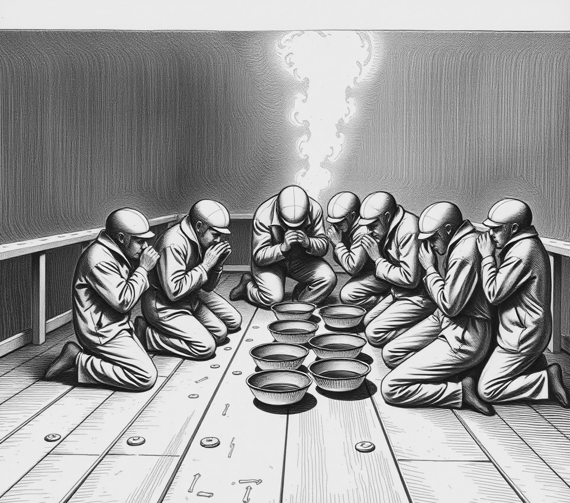

Shackleton-South Rim . 15 April 2373

At dawn, eleven air-dock workers knelt on the cold basalt floor of Lock Four. They held spit-trays.
Senior seal-brusher Amara Osei led the scrub. Two hours earlier, a junior fitter had looked through the thick port at the Earth above the crater wall and called the shift a breath of fresh air.
By six o'clock, the safety board had quarantined the lock. Spoken references to unmetered weather carry a Grade One contamination penalty under crater law. The phrase implies that gas exists without a bill.
"We wipe the seal with zinc paste," Osei said, rinsing her mouth with sterile brine. "Then we spit into the grey sump."
Work on three freight barges stopped completely. The entire dock crew gargled recycled nitrogen while a chime rang through the ducts. No one smiled.
To ensure the spoken words left no acoustic vibration in the steel, the safety board opened the outer hatch. They dumped ninety thousand litres of pressurised oxygen into the crater to flush the phrase out.
"It is about discipline," Osei said, checking her wrist-gauge. "If workers think air is free, they stop looking at the gaskets."
The fitter was sent to the deep ice drills. He is now only permitted to speak in numbers.